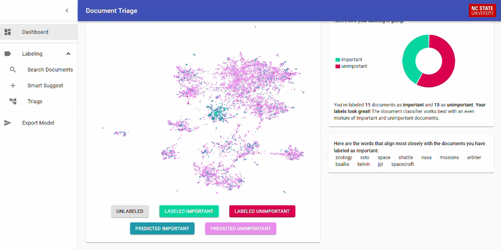

Terrace
In the summer of 2020, I interned at the Laboratory for Analytic Sciences (LAS). LAS is a research organization, run as a partnership
between North Carolina State University and the National Security Agency.
I ran my own project which focued on figuring out how to improve the process of extracting important information from large collections
of documents. I frst performed a series of experiments involving training various machine learning models on datasets of categorized
documents, to see if it was possible to predict which documents a person would find important. I found that it could be done with high
accuracy using large neural networks, but the model training was too slow for any interactive system.
I approached the problem as a classification task. A user presented with a huge dump of documents will want to separate them into two categories:
important or unimportant. As the user works through the documents, they will be able to easily label them, and a ML model can be used to learn the
distinction.
My final solution made use of two important techniques. First, it used a XGBoost model to do real-time active learning1 with the user. The
model can be trained quickly to achieve reasonable performance, so the documents presented to the user to label can be updated often. This is important
for maximizing the knowledge gained by each document. Second, a large neural network was trained in the background to provide the most accurate predictions.
Since the training process for this model was slow, it was not suitable for real-time feedback, but it was important to update the application with high-accuracy
predictions every so often.

For any AI-powered service with non-technical users, it is important for the process to be interpretable as possible. To promote interpretablity, I did two
key things. First, I embedded each document as a 2D vector, and plotted them as shown above. I then color-coded the points as to whether the models thought
the document was important or not. This allows the user to visually interpret the model's predictions. Second, I extracted the words the models most closely
associated with important documents. This can demonstrate why the models think certain documents are important.
1Active learning is a process where the model being trained suggests data-points for the human to label. By labeling points where the model is unsure,
it has been shown that models can achieve the same accuracy for much less data.